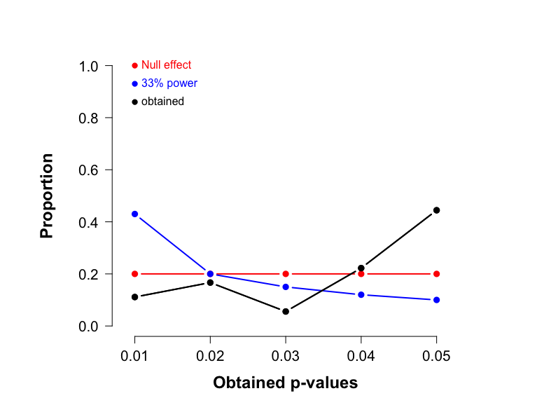
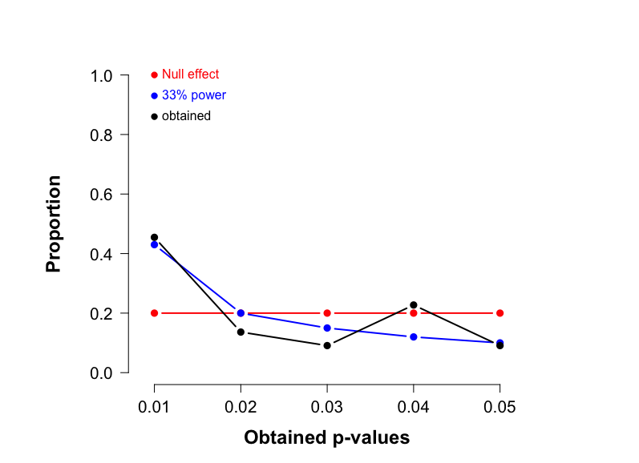

Week 10 lecture notes - PSYC 5301
Review of Questions from Week 9
Elderly priming?
Suppose that after reading some literature, you have come across a truly remarkable finding. This finding, originally due to Bargh, Chen, and Burrows (1996), revealed that social primes could result in activation of stereotyped behavior. For example, participants for whom an elderly stereotype was primed (e.g., "old", "lonely", bitter") tended to walk more slowly down the hallway when leaving the experiment than did control participants, a behavior which was consistent with the elderly stereotype!
Amazed by this, you search for more literature on this "elderly priming" phenomenon and collect a table of p-values for a list of elderly priming effects:
| Article | Study | p-value |
|---|---|---|
| Aarts & Dijksterhuis (2002) | 1a | 0.028 |
| 1b | 0.041 | |
| 2a | 0.032 | |
| 2b | 0.015 | |
| Bargh, Chen, & Burrows (1996) | 2a | 0.008 |
| 2b | 0.039 | |
| Cesario, Plaks, & Higgins (2006) | 1 | 0.047 |
| 2 | 0.019 | |
| Dijksterhuis, Aarts, Bargh, & van Knippenberg (2000) | 1 | 0.048 |
| 2 | 0.046 | |
| Dijksterhuis, Spears, & Lepanasse (2001) | 1 | 0.042 |
| 2 | 0.0006 | |
| 3 | 0.044 | |
| Kawakami, Young, & Dovidio (2002) | 1 | 0.017 |
| 2 | 0.033 | |
| Ku, Wang, & Galinksy (2010) | 2 | 0.046 |
| 3 | 0.034 | |
| Mussweiler (2006) | 2 | 0.043 |
Given this extensive survey of the literature, discuss the evidence for "elderly priming". Are you convinced that this is a real effect? Would you expect to find significant results if you replicated one of these experiments? Why/why not?
Most students reported that this was fishy, as our last lecture indicated that we would expect p-values on the smaller end of the "significant" scale if there was a real effect. In fact, one student plotted a histogram of the p-values obtained above. The result is similar to that of a p-curve, which is plotted below:

As we can see, the observed p-curve differs quite a bit from what would be expected, even at moderate power.
What about "professor priming"?
Similar to elderly priming, Dijksterhuis & Van Knippenberg (1998) showed that activating the stereotype of a professor will make people work harder and perform better on a general knowledge test.
Since we may have a harder time believing the elderly priming paradigm (from our above p-curve analysis), what about professor priming? Let's do a similar analysis:
| Article | Study | p-value |
|---|---|---|
| Bry, Follenfant, & Meyer (2008) | 1 | 0.019 |
| 2a | 0.008 | |
| 2b | 0.037 | |
| Dijksterhuis & van Knippenberg(1998) | 1 | 0.002 |
| 2 | 0.001 | |
| 3 | 0.0015 | |
| 4 | 0.011 | |
| Galinksy, Wang, & Ku (2008) | 2a | 0.016 |
| 2b | 0.038 | |
| Haddock, Macrae, & Fleck (2002) | 1a | 0.0018 |
| 1b | 0.037 | |
| 2 | 0.0053 | |
| Hansen & Wanke (2009) | 1 | 0.027 |
| 2 | 0.021 | |
| LeBoeuf & Estes (2004) | 1 | 0.06 |
| 2 | 0.003 | |
| 3 | 0.04 | |
| 4 | 0.079 | |
| Lowery et al. (2007) | 2 | 0.031 |
| Nussinson et al. (2010) | 3a | 0.009 |
| 3b | 0.0012 | |
| 3c | 0.006 |
We can plot a similar p-curve:

What do you think?
For more details on p-curves, read the following:
- Simonsohn, Nelson, & Simmons (2014)
- one article in JEP:G
- one article in Perspectives on Psychological Science
Bayes factors: a different tool for inference
This semester, we have discussed how p-values should be used, as well as how they often are used. These don't always match up.
Now, I will introduce you to another analytic tool for making inference: the Bayes factor. Roughly speaking, the Bayes factor (BF) tells you how much a set of data will update your "belief" in one hypothesis over another. This comes from an elementary result in probability theory called Bayes Theorem.
Bayes' Theorem
First, we need to talk about conditional probability, denoted \(p(A \mid B)\). This notation is read "probability of A, given B".
An example is as follows: suppose you roll a single die. What is the probability of rolling a 6, given that the outcome is even?
The answer, of course, is 1/3. Why? Well, by saying "given that the outcome is even", you've reduced the possible outcomes from the set \(\{1,2,3,4,5,6\}\) to \(\{2,4,6\}\). Since the outcome "6" is one of these three outcomes, the probability is 1/3.
To compute conditional probability in general, one uses the formula
\[ p(A\mid B) = \frac{p(A\cap B)}{p(B)} \]
Rewriting this, we get the following identity:
\[ p(A\cap B) = p(A\mid B)\cdot p(B) \]
Similarly, we can also write
\[ p(A\cap B) = p(B\mid A)\cdot p(A) \]
Setting these two equations equal, we get:
\[ p(A\mid B)\cdot p(B) = p(B\mid A)\cdot p(A) \]
and solving for \(p(A\mid B)\) gives us:
\[ p(A\mid B) = \frac{p(B\mid A)\cdot p(A)}{p(B)} \]
This equation is known as Bayes' Theorem.
Bayes' Theorem for hypotheses and data
Bayes' theorem is quite general, but it can be incredibly useful in the following form:
\[ p(H\mid \text{data}) = \frac{p(\text{data}\mid H)\cdot p(H)}{p(\text{data})} \]
Let's write this formula for two hypothesis: \(H_0\) and \(H_1\):
\[ p(H_0\mid \text{data}) = \frac{p(\text{data}\mid H_0)\cdot p(H_0)}{p(\text{data})} \]
and
\[ p(H_1\mid \text{data}) = \frac{p(\text{data}\mid H_1)\cdot p(H_1)}{p(\text{data})} \]
This implies:
\[ \underbrace{\frac{p(H_0 \mid \text{data})}{p(H_1\mid\text{data})}}_{\text{posterior odds}} = \underbrace{\frac{p(\text{data}\mid H_0)}{p(\text{data}\mid H_1)}}_{\text{Bayes factor}} \cdot \underbrace{\frac{p(H_0)}{p(H_1)}}_{\text{prior odds}} \]
Thus, the Bayes factor (\(BF_{01}\)) is a multiplier that tells us how much to update our relative belief after seeing the data. Larger is better, of course:
Recommendations of Jeffreys (1961):
| BF | evidence |
|---|---|
| 1 | no evidence |
| 1-3 | anecdotal evidence |
| 3-10 | moderate evidence |
| 10-30 | strong evidence |
| 30-100 | very strong evidence |
There is a nice symmetry with BF, though. Note that I could just as easily compute \(BF_{10}\). Thus, I can get support for the alternative OR support for the null.
Given a statistical result in a paper, can I compute a Bayes factor?
YES! But in general, this can be quite hard! Fortunately, there are new methods being developed all the time. We'll illustrate two tonight:
- using JASP "Summary Stats" module (works for t-tests and correlations)
- Bargh, Chen, & Burrows (1996) reported that participants in the elderly priming condition walked more slowly (M=8.20 s) than participants in neutral priming condition (M=7.23 s), t(28)=2.16, p<0.05.
- using JASP Summary Stats module, we can see that \(BF_{10}=1.88\), which means that the alternative is only 1.88 times more likely than the null. This is barely considered anecdotal evidence.
- Cesario et al. (2006) reported a similar priming effect, t(47)=1.98,p=0.05. As you can see, this results in $BF10=1.37. Again, barely considered anecdotal evidence.
- Bargh, Chen, & Burrows (1996) reported that participants in the elderly priming condition walked more slowly (M=8.20 s) than participants in neutral priming condition (M=7.23 s), t(28)=2.16, p<0.05.
- using approximate Bayes factors for ANOVA…see Faulkenberry & Tummolini (2016)
Assignment for next week (Week 11 (online) – April 4)
Find a paper that reports something interesting. See if you can compute a Bayes factor for that result.
- Note: it will be easiest if you find a t-test, because then you can use JASP. ANOVA is harder, but can be done by hand using Faulkenberry and Tummolini method.
Next steps on mental arithmetic experiment
Assignment for next meeting (Week 12 – April 11)
- download the raw data from the course website and compile into a single CSV file.
- Start playing with the data in JASP. What analyses could you run? Be ready to discuss your results at our next class meeting.
- Read Campbell and Fugelsang (2001). Do you think our data could be used to test any claims made in this paper?